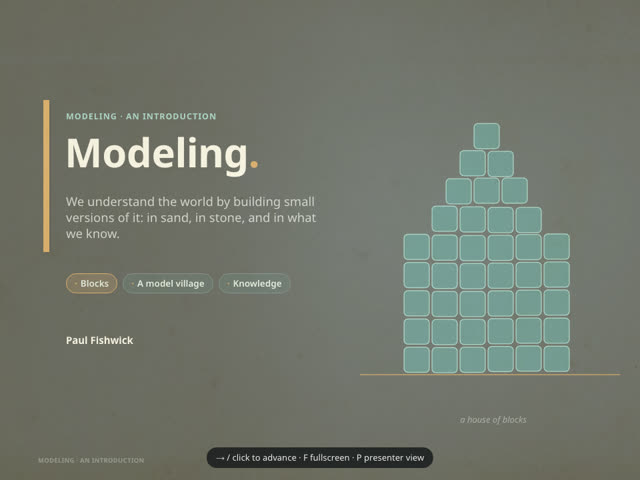
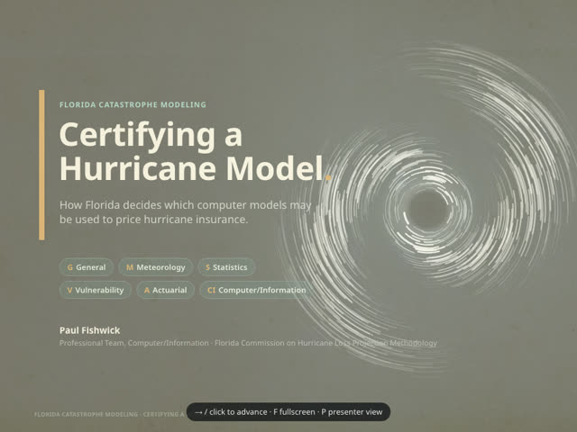
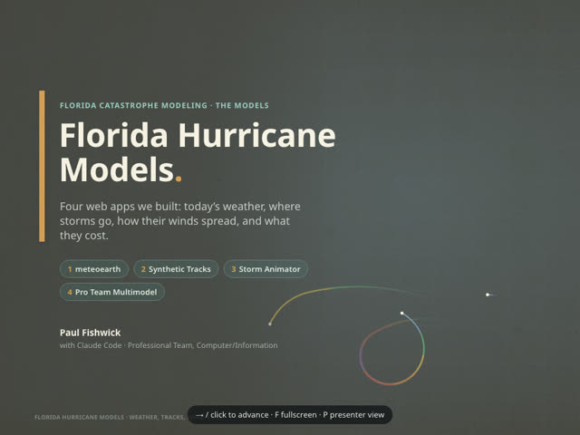
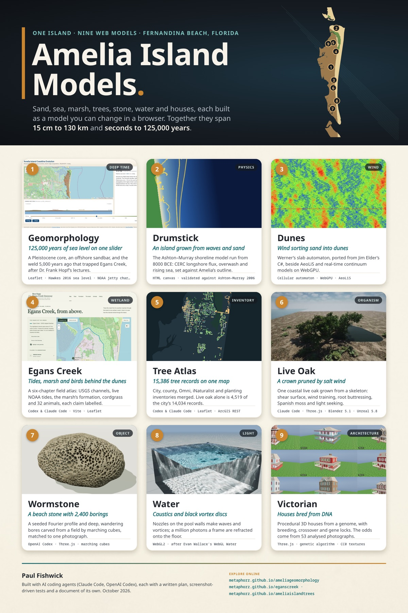
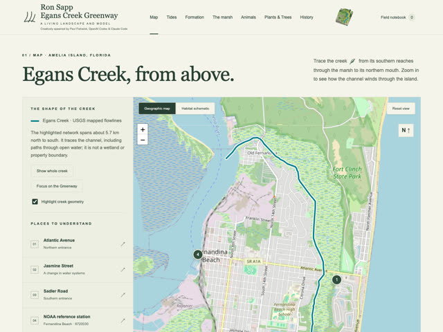

What a model is, how Florida certifies hurricane models, the models we built, and the models of one island.

What a model is: sandboxes, a model village, and three kinds of model: knowledge, shape and dynamic.

From Hurricane Andrew to the Florida Commission: standards, the on-site audit, the vote, rates and the Cat Fund.

Today’s weather, synthetic tracks, windfields and losses: four of our web models, live.

Nine web models of one island, on the poster, then Egans Creek: one site that brings many models together.
In each talk, ⌂ Class home at the top left, or the H key, brings you back here.
Sand, sea, marsh, trees, stone, water and houses, each built as a model you can change in a browser. Together they span 15 cm to 130 km and seconds to 125,000 years.
Click a model to zoom into it.
Next: one of the nine, Egans Creek, where a single web page brings many models together.

A web model gathers different kinds of model about one place into one site, so each can be read against the others.
Egans Creek runs about 5.7 km north to south through the Ron Sapp Egans Creek Greenway on Amelia Island, from the marsh to its northern mouth.
Each tab is a different model of the same creek. Around them: a walkable 3D Egans Creek in Blocks, and poems and artworks linked to the species and stages.
Knowledge, shape and dynamic models, all about one creek, one click apart.